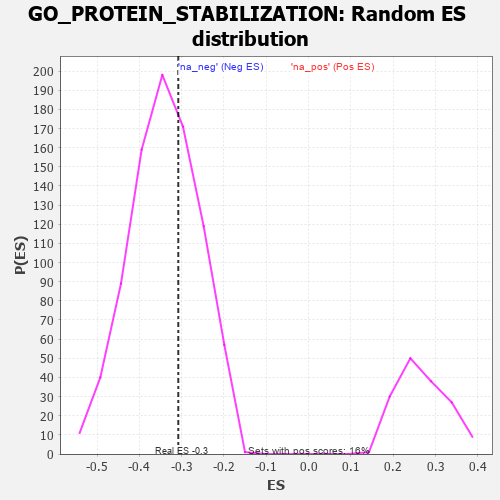

| | | Dataset | 7d |
| Phenotype | NoPhenotypeAvailable |
| Upregulated in class | na_neg |
| GeneSet | GO_PROTEIN_STABILIZATION |
| Enrichment Score (ES) | -0.30793324 |
| Normalized Enrichment Score (NES) | -0.90259814 |
| Nominal p-value | 0.64378697 |
| FDR q-value | 0.9495879 |
| FWER p-Value | 1.0 |
Table: GSEA Results Summary
 Fig 1: Enrichment plot: GO_PROTEIN_STABILIZATION
Fig 1: Enrichment plot: GO_PROTEIN_STABILIZATION
Profile of the Running ES Score & Positions of GeneSet Members on the Rank Ordered List
| PROBE | GENE SYMBOL | GENE_TITLE | RANK IN GENE LIST | RANK METRIC SCORE | RUNNING ES | CORE ENRICHMENT | | 1 | CCNH | | | 301 | 0.817 | -0.0043 | No |
| 2 | MCM8 | | | 646 | 0.578 | -0.0238 | No |
| 3 | CDK7 | | | 686 | 0.564 | -0.0054 | No |
| 4 | HCFC1 | | | 902 | 0.506 | -0.0117 | No |
| 5 | NLK | | | 911 | 0.504 | 0.0082 | No |
| 6 | DVL3 | | | 971 | 0.490 | 0.0210 | No |
| 7 | TELO2 | | | 1006 | 0.482 | 0.0366 | No |
| 8 | TAF9 | | | 1046 | 0.475 | 0.0513 | No |
| 9 | OTUD3 | | | 1450 | 0.400 | 0.0169 | No |
| 10 | CSN3 | | | 1548 | 0.383 | 0.0205 | No |
| 11 | DNLZ | | | 2012 | 0.303 | -0.0255 | No |
| 12 | CREB1 | | | 2243 | 0.269 | -0.0434 | No |
| 13 | COG7 | | | 2371 | 0.250 | -0.0491 | No |
| 14 | BAG3 | | | 2620 | 0.209 | -0.0718 | No |
| 15 | PHB2 | | | 2712 | 0.197 | -0.0751 | No |
| 16 | CPN2 | | | 2936 | 0.160 | -0.0967 | No |
| 17 | CHP1 | | | 3089 | 0.138 | -0.1102 | No |
| 18 | SMAD3 | | | 3303 | 0.105 | -0.1328 | No |
| 19 | NCLN | | | 3353 | 0.096 | -0.1350 | No |
| 20 | SMAD7 | | | 3369 | 0.093 | -0.1330 | No |
| 21 | AAK1 | | | 3400 | 0.089 | -0.1331 | No |
| 22 | COG3 | | | 3412 | 0.088 | -0.1309 | No |
| 23 | PIN1 | | | 3543 | 0.069 | -0.1445 | No |
| 24 | HYPK | | | 4154 | -0.034 | -0.2201 | No |
| 25 | BAG4 | | | 4314 | -0.061 | -0.2377 | No |
| 26 | MTMR9 | | | 4387 | -0.074 | -0.2437 | No |
| 27 | CDC37 | | | 4446 | -0.084 | -0.2476 | No |
| 28 | SYVN1 | | | 4454 | -0.085 | -0.2449 | No |
| 29 | HIP1 | | | 4485 | -0.092 | -0.2449 | No |
| 30 | BAG6 | | | 4563 | -0.108 | -0.2502 | No |
| 31 | PIM1 | | | 4776 | -0.152 | -0.2707 | No |
| 32 | RTN4 | | | 4783 | -0.154 | -0.2651 | No |
| 33 | PIM2 | | | 4789 | -0.155 | -0.2593 | No |
| 34 | FBXW7 | | | 4816 | -0.161 | -0.2559 | No |
| 35 | CLU | | | 4889 | -0.174 | -0.2578 | No |
| 36 | EP300 | | | 4941 | -0.186 | -0.2565 | No |
| 37 | A1CF | | | 5002 | -0.198 | -0.2559 | No |
| 38 | WDR81 | | | 5024 | -0.203 | -0.2502 | No |
| 39 | SMO | | | 5195 | -0.247 | -0.2615 | No |
| 40 | PTEN | | | 5262 | -0.261 | -0.2590 | No |
| 41 | EPHA4 | | | 5273 | -0.265 | -0.2493 | No |
| 42 | PDCL3 | | | 5738 | -0.388 | -0.2919 | Yes |
| 43 | LAMP1 | | | 5796 | -0.404 | -0.2824 | Yes |
| 44 | IFT46 | | | 5802 | -0.406 | -0.2663 | Yes |
| 45 | CALR | | | 6077 | -0.499 | -0.2803 | Yes |
| 46 | FLOT2 | | | 6092 | -0.504 | -0.2612 | Yes |
| 47 | STK4 | | | 6145 | -0.518 | -0.2463 | Yes |
| 48 | FLOT1 | | | 6276 | -0.564 | -0.2395 | Yes |
| 49 | PEX19 | | | 6569 | -0.693 | -0.2477 | Yes |
| 50 | PEX6 | | | 6605 | -0.713 | -0.2226 | Yes |
| 51 | RABL3 | | | 6627 | -0.727 | -0.1952 | Yes |
| 52 | ANK2 | | | 7298 | -1.170 | -0.2315 | Yes |
| 53 | GRN | | | 7319 | -1.194 | -0.1847 | Yes |
| 54 | PPIB | | | 7499 | -1.396 | -0.1496 | Yes |
| 55 | SAXO1 | | | 7592 | -1.543 | -0.0974 | Yes |
| 56 | TAF1 | | | 7643 | -1.633 | -0.0362 | Yes |
| 57 | PLPP3 | | | 7740 | -1.876 | 0.0292 | Yes |
Table: GSEA details [plain text format]

Fig 2: GO_PROTEIN_STABILIZATION: Random ES distribution
Gene set null distribution of ES for GO_PROTEIN_STABILIZATION